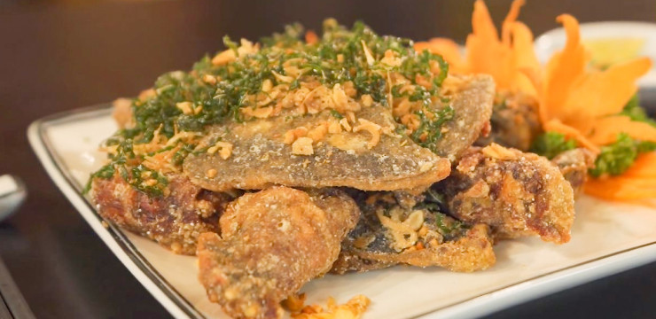

Foodworld
Trang chủ
Menu
Đăng nhập
Liên hệ
TRANG CHỦ/CÁC MÓN ĂN TỪ BABA

Baba rang muối
220,000đ
THÊM VÀO GIỎ HÀNG
Ba ba om chuối đậu
200,000đ
THÊM VÀO GIỎ HÀNG
Ba ba nướng
270,000đ
THÊM VÀO GIỎ HÀNG